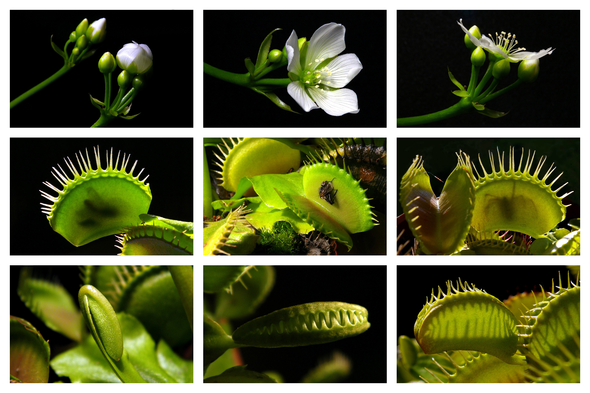
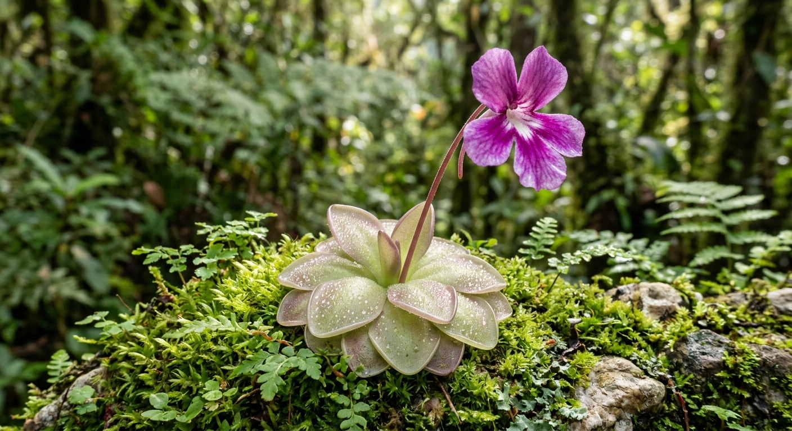
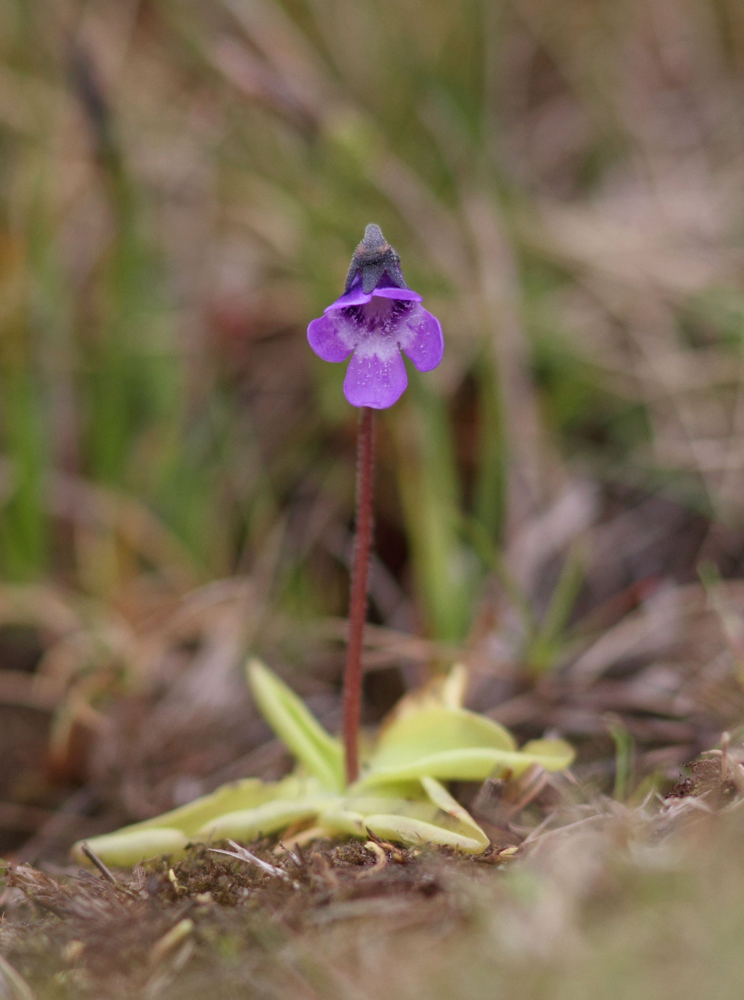
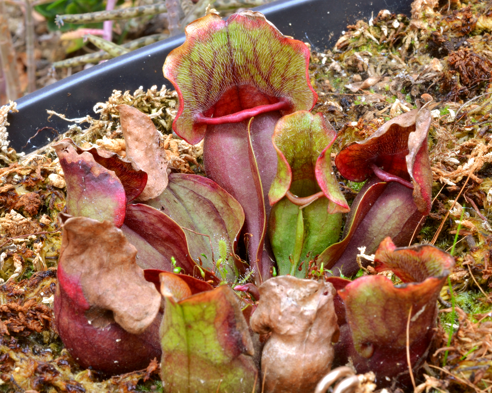
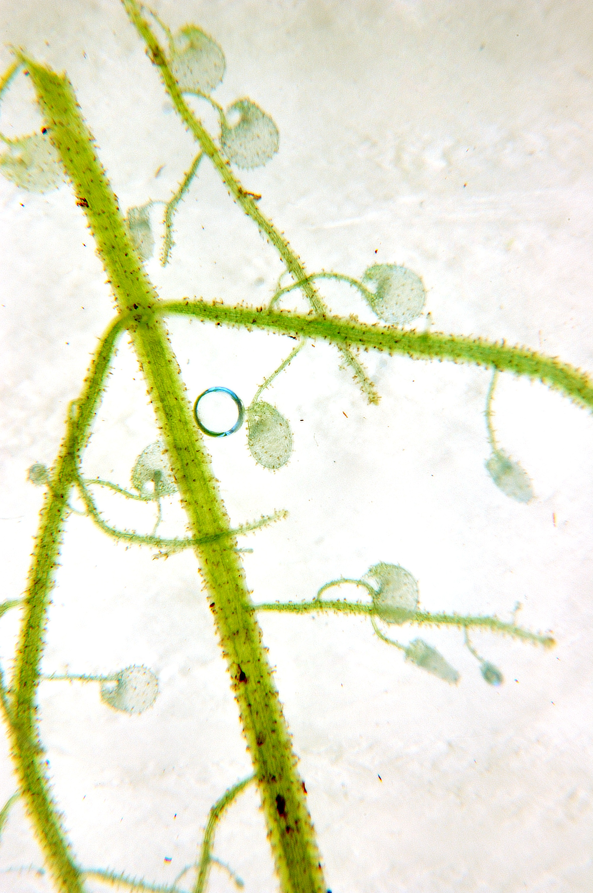
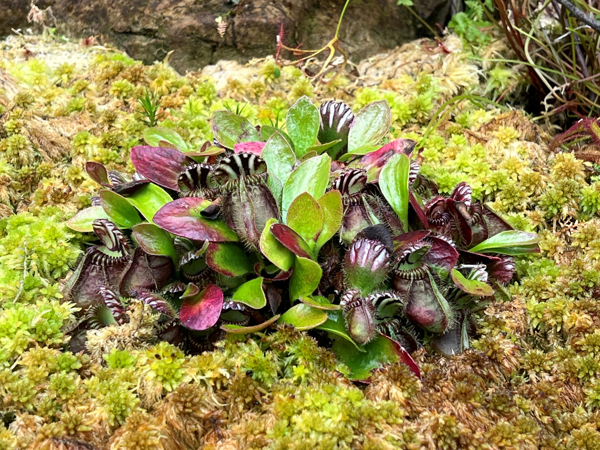
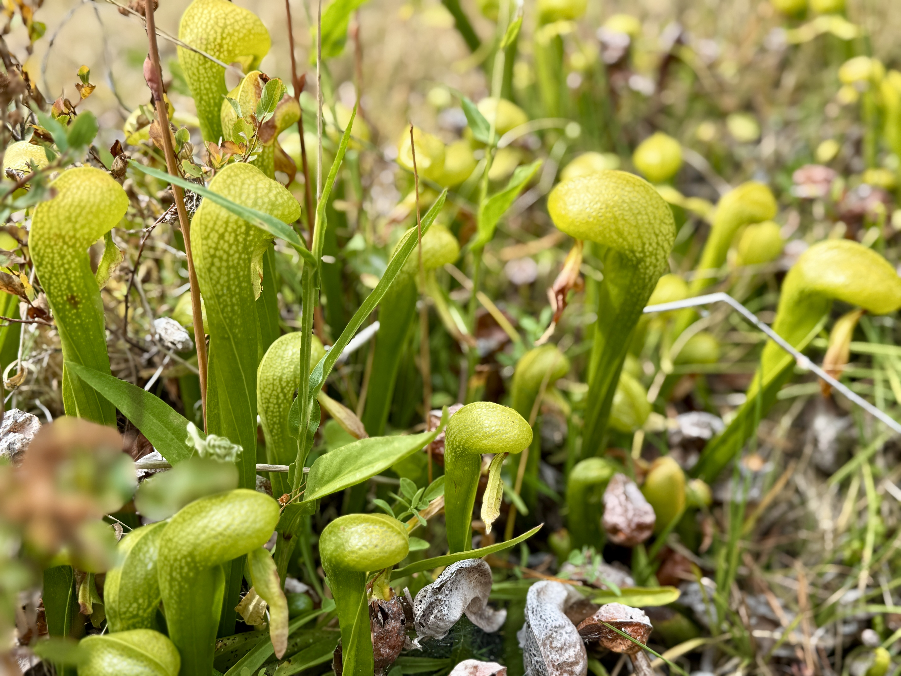

Prima di iniziare
Le piante carnivore non sono tutte uguali: provengono da ambienti molto diversi e hanno esigenze differenti. Alcune amano il sole diretto e il freddo invernale, altre richiedono temperature miti e luce filtrata. Le indicazioni qui raccolte sono una base pratica: quando si conosce la specie precisa, è sempre meglio adattare la coltivazione alle sue esigenze.
Scegli la pianta da consultare
Seleziona una fotografia per aprire la scheda dedicata. Troverai le indicazioni specifiche per la sua coltivazione.

Drosera
Genere Drosera
Apri la scheda →
Dionaea
Dionaea muscipula – Venere acchiappamosche
Apri la scheda →
Pinguicule messicane
Pinguicula – specie messicane
Apri la scheda →
Pinguicule temperate
Pinguicula – specie temperate
Apri la scheda →
Sarracenia
Genere Sarracenia
Apri la scheda →
Nepenthes
Genere Nepenthes – piante a ascidio
Apri la scheda →
Utricularia
Genere Utricularia
Apri la scheda →
Cephalotus
Cephalotus follicularis – Pianta brocca australiana
Apri la scheda →
Darlingtonia
Darlingtonia californica – Pianta cobra
Apri la scheda →Dopo aver curato le tue piante,
lasciati incuriosire da un'avventura.
Se in casa ci sono giovani lettori, c'è anche un mondo di fantasia da scoprire: la trilogia di Alistair, tre storie tra avventura, mistero, personaggi stravaganti e amicizia. Una proposta da esplorare insieme, magari proprio dopo aver finito di prenderti cura delle tue piante carnivore.
La guida botanica resta il cuore di questa pagina. La trilogia è una lettura extra, per chi desidera scoprirla.